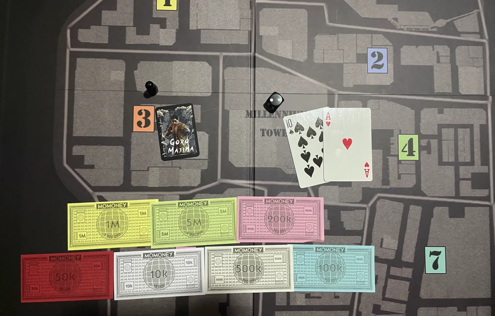
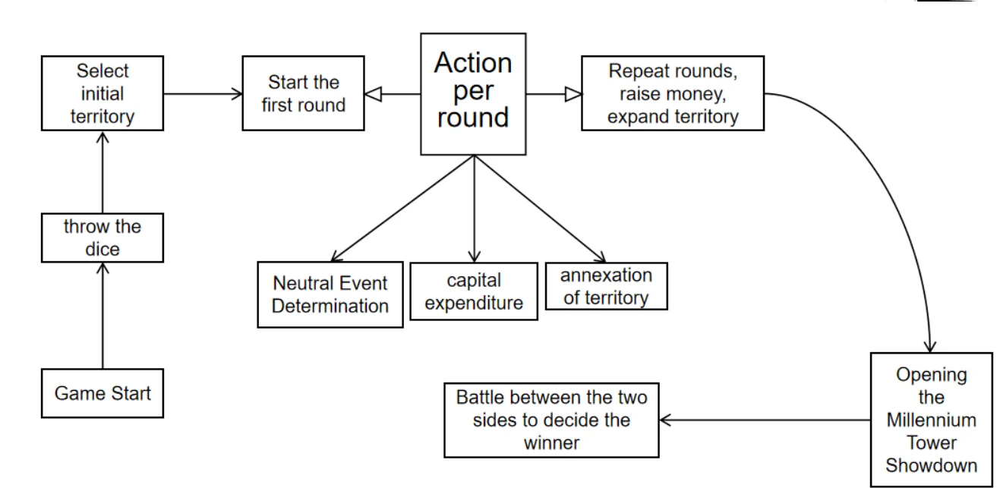
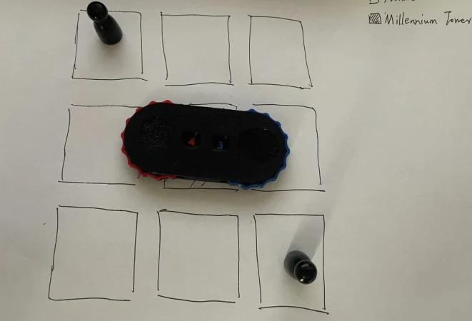
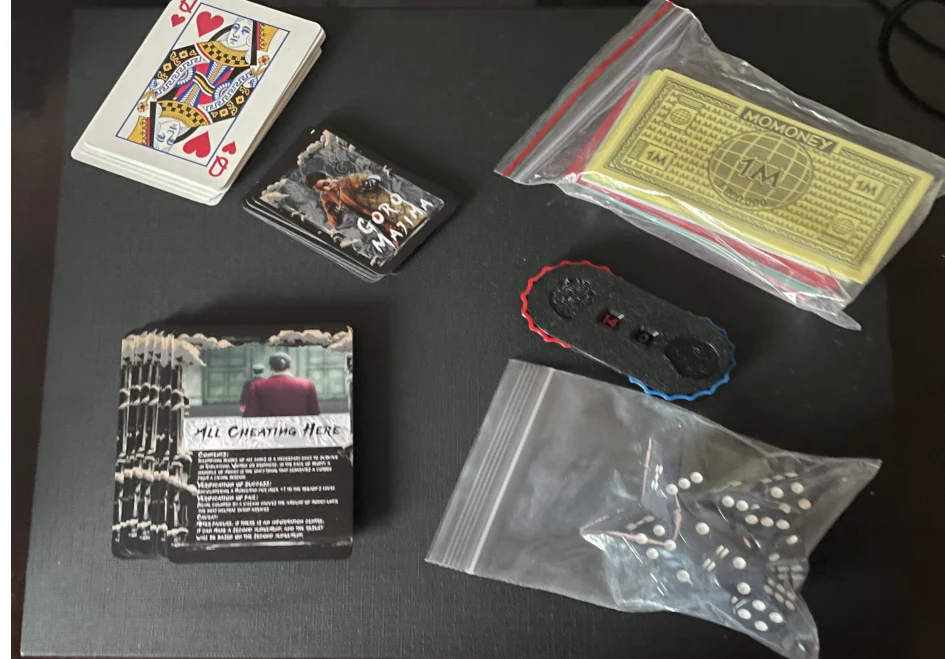

Build income
Choose starting territory and use its resources to develop funds and capabilities.
Every territory changes the next decision.
PHYSICAL TABLETOP PROTOTYPEPROTOTYPE STILLS
PHYSICAL TABLETOP PROTOTYPE
01 / THE IDEA
A non-commercial, fan-inspired strategy board-game study using Yakuza / Like a Dragon’s Kamurocho setting.
Players build income through territories, invest in development and use character strength to contest rival holdings. Regional risk and neutral-event timing interrupt that expansion, while a planned Millennium Tower showdown gives the economy a final objective. The design adapts territory-annexation ideas from Rurik: Dawn of Kiev and links them more closely to combat values and money.
Choose starting territory and use its resources to develop funds and capabilities.
Connect money and character strength to territory development and contested ownership.
Track neutral-event rounds and regional risk while progressing toward the planned final showdown.
CURRENT SCOPE
A physical prototype, rules flow and component development are documented. The portfolio states a target of 2–3 players and approximately 20 minutes; these are design specifications, not verified session measurements. This is an unofficial, non-commercial study prototype, and does not claim an original Yakuza IP or provide a licensed print-and-play release.
02 / MY CONTRIBUTION
My work covers the rules and system design, prototype map and component organisation. I linked territory control, character battle values, income and neutral-event risk, then prepared physical materials and rule diagrams to make those relationships visible at the table. The character setting and borrowed artwork remain third-party content.
Link territory income, capital spending, character strength and annexation conditions into one decision structure.
Design regional risk levels, neutral-event checks and counters that make event timing visible.
Prepare the map, card and marker arrangement, rule flows and prototype materials shown in the portfolio.
03 / A CLOSER LOOK
Select an image. Take a closer look.



Yakuza / Like a Dragon supplies the fan-inspired setting and character references; its IP and character artwork remain their respective rights holders’ work. Rurik: Dawn of Kiev is the documented territory-annexation design reference. Commercial playing-card and play-money components and other borrowed visual assets are not claimed as original work. These selected prototype photographs and flow diagrams document learning and system design; they do not grant a licence to reproduce the IP or materials. No official affiliation is implied.
BACK TO THE COLLECTION